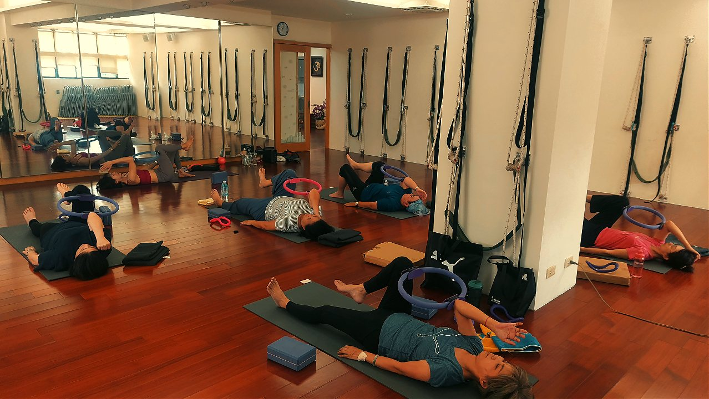

忙到忘了起身？把久坐提醒接到手邊的工作

報表改完一輪，再回兩封信，等你想喝水時才發現杯子早空了，人卻一直坐著。這時，能真的起身的一個小提示，比知道坐了多久更有用。
中斷久坐可以從一個容易記住的提醒開始，例如每 40 分鐘或每做完一件事換個位置。起身、走幾步或在會議中調整坐姿，都能中斷維持同一位置的時間。提醒頻率可依工作情境和感受調整，40 分鐘不是身體受傷的門檻，短休息也不能判定不適原因。
一直忘了起身，提醒設在哪個時刻？
可以用 40 分鐘當試行提醒，也可以把它接在工作交接點，例如會議散場、寄出檔案或喝完一杯水。先選最不會被忽略的一個。想了解一整天久坐的生活情境，另有專文。
👆 手機版可左右滑動
| 當下能不能離席 | 可以怎麼換 | 適合用什麼當提醒 |
|---|---|---|
| 不能離席 | 先換坐法，讓手或腳回到有支撐的位置。 | 一句會議告一段落時。 |
| 能站起來 | 起身裝水，或讓視線暫離螢幕。 | 一封信寄完或計時提醒響時。 |
| 有多一點空檔 | 走到門口或附近再回來。 | 兩個行程之間。 |
會議還沒結束，現在不能離席怎麼辦？
可以先換一個坐法，把腳放回地面或暫時把手離開鍵盤。到了空檔再去裝水或走幾步。如果主要在意上半身的工位短休息，可看兩場會議之間怎麼活動。
常見問題
坐滿 40 分鐘才可以起來嗎？
可以依工作情境更早或更晚換姿勢。40 分鐘只是方便記住的例子。
忙到一直忘記，怎麼辦？
用你本來就會做的事當提醒，例如結束一場會議或倒水。
先記下最有感的日常時刻
先記下最容易忘記換姿勢的那段工作時間。
約 2 分鐘，免登入、免加 LINE。做完可用 3 天觀察卡整理日常感受。
開始免費 2 分鐘體態訊號掃描 →延伸閱讀 接著看一天久坐的常見情境